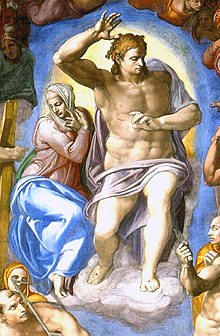
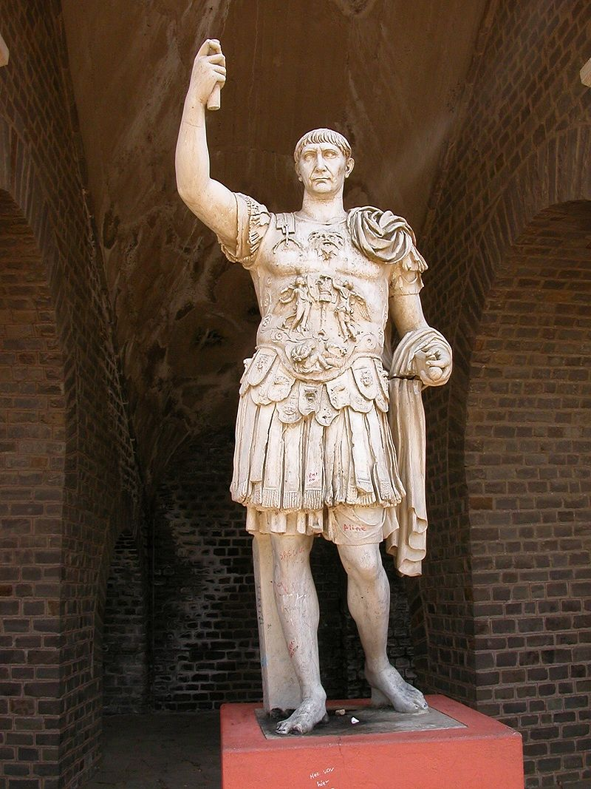
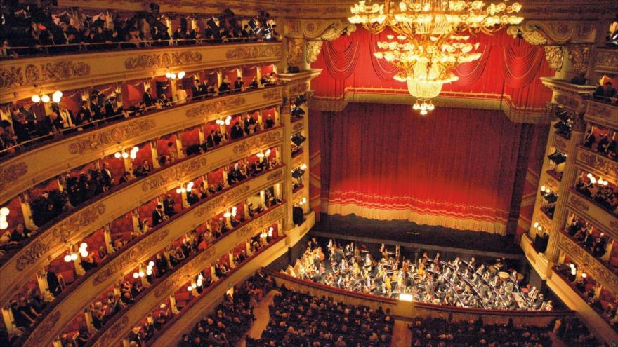
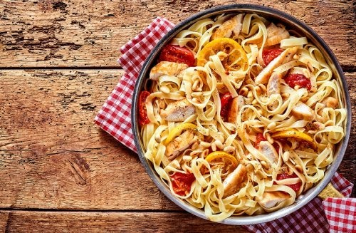

Cultura de Italia
Pintura Renancentista
Siguiendo la pintura las evoluciones que siguió el arte escultórico, en los periodos de preparación al renacimiento, llegó a la fase perfecta de éste muy poco después que su precursora la escultura, es decir, durante el siglo XV en Italia y ya entrado el siglo siguiente en los otros países. En general, el siglo XV es de iniciación y los siglos XVI y XVII lo son de apogeo para la pintura del renacimiento clásico. Pero en Italia, se inicia ya la decadencia poco después de mediado el siglo XVI por querer los artistas imitar las obras de los grandes maestros anteriores más bien que inspirarse en el estudio de la naturaleza. La decadencia total en los diferentes países corresponde al siglo XVIII siguiéndole cierta restauración a finales de dicho siglo.
Escultura renacentista
El llamado Renacimiento clásico reconoce por dos principios fundamentales:Estudio e imitación de la Naturaleza y Adopción de las formas y maneras clásicas de Grecia y Roma para la interpretación de la misma Naturaleza en el terreno plástico. El primero de esos principios constituía la base de la escultura gótica y si no fue seguido con toda fidelidad en muchas de sus obras, se hubiera logrado al fin, dadas las vías de progreso que felizmente recorrió dicha escultura, sin necesidad de acudir a los modelos antiguos de Grecia y Roma cuya imitación desvió el curso del arte cristiano. No cabe duda que el arte del Renacimiento logró interpretar la Naturaleza y traducirla con libertad y soltura por medio del pincel y el escoplo en gran multitud de obras maestras. Pero en cambio el afán de sus artistas por volver a las formas clásicas de la antigüedad pagana y su mitología no pudo menos que restar inspiración religiosa a la escultura y de hacerla más cultivadora de la forma exterior y del desnudo. Sin embargo, ni todos los escultores que se dicen del Renacimiento se inspiraron directamente en la escultura clásica, aunque participaron del espíritu reinante, ni todas las obras de los que siguieron tales inspiraciones merecen la misma crítica.
Música
La primera obra considerada una obra, en el sentido comúnmente entendido, data aproximadamente del año 1597. Esta fue Dafne, (obra actualmente desaparecida) escrita por Jacopo Peri para un círculo de humanistas letrados florentinos conocidos como la Camerata de Bardi de Dafne fue un intento por revivir la tragedia griega clásica, como parte de la amplia reaparición de la antigüedad que caracterizó al Renacimiento. Un siguiente trabajo de Peri, Eurídice, que data del año 1600, es la primera ópera que haya sobrevivido hasta la actualidad. No obstante, el uso del término ópera se inicia cincuenta años después, a mediados del siglo XVII para definir las piezas de teatro musical, a las cuales se les refería hasta ese momento con formulaciones universales como dramma per musica ('drama musical') o favola in musica ('fábula musical'). Diálogo hablado o declamado, llamado "recitativo" en la ópera, acompañado por una orquesta o por una escueta línea de bajo, es la característica fundamental del melodrama, en el sentido original.
gastronomía
La gastronomía de Italia es extremadamente variada: el país fue unificado en el año 1861, y sus cocinas reflejan la variedad cultural de sus regiones así como la diversidad de su historia. La cocina italiana se ha desarrollado a través de siglos de cambios sociales y políticos, que tiene sus raíces en la antigua Roma. Alcachofas, guisantes, lechuga, perejil, melones y manzanas, así como el vino y el queso, muchos tipos de carnes y granos ya estaban utilizados por los antiguos romanos. Se produjeron cambios significativos con el descubrimiento del Nuevo Mundo y la introducción de patatas, tomates, pimientos y maíz ahora centrales para la cocina, pero no introducidos en cantidad hasta el siglo XVIII. La cocina italiana está incluida dentro de la denominada gastronomías mediterráneas y es imitada, así como practicada en todo el mundo. Asimismo, Italia es el máximo exportador y productor a nivel mundial de vino, con exportaciones de más de 2,38 millones de toneladas en 2011. A partir de 2005, Italia produjo aproximadamente una quinta parte de vino del mundo. Café, más específicamente espresso y cappuccino son también bebidas icónicas de los italianos famosas en el mundo. El país también es famoso por su helado a menudo conocido como 'gelato italiano' en el extranjero.
